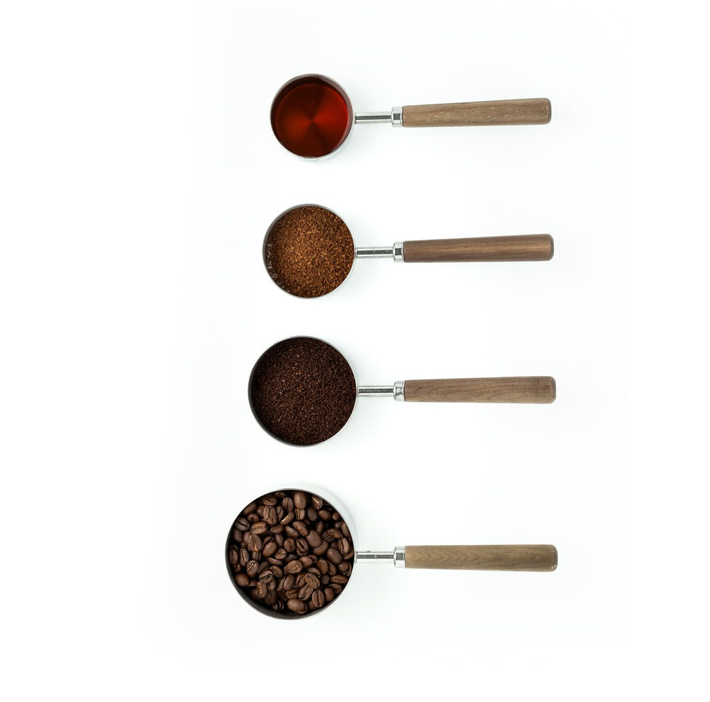

About us!
We are loacted in Helena Mt, but have an online base to help others learn about unique and fun coffee shops around Montana.
Exploring Montana Coffee
We will explore popular cities around Montana including Missoula, Bozeman, Helena, Whitefish, and Bigsky and the coffee shops that are located in these beautiful towns with a view.
Videos
Also on this webpage is are fun videos that can help you learn how to make your own coffee at home.
Quiz
Take a fun short quiz and see how much you know about the coffee industry.